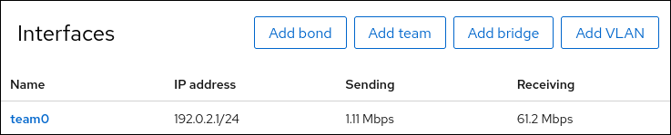

Configuring a NIC team by using the RHEL web console
-
The
teamdandNetworkManager-teampackages are installed. -
Two or more physical or virtual network devices are installed on the server.
-
To use Ethernet devices as ports of the team, the physical or virtual Ethernet devices must be installed on the server and connected to a switch.
-
To use bond, bridge, or VLAN devices as ports of the team, create them in advance as described in:
-
You have installed the RHEL 9 web console.
-
You have enabled the cockpit service.
-
Your user account is allowed to log in to the web console.
For instructions, see Installing and enabling the web console.
Use the RHEL web console to configure a network interface controller (NIC) team if you prefer to manage network settings using a web browser-based interface.
NIC teaming is deprecated in Red Hat Enterprise Linux 9. Consider using the network bonding driver as an alternative. For details, see Configuring a network bond.
-
By default, the team uses a dynamic IP address. If you want to set a static IP address:
-
Click the name of the team in the
Interfacessection. -
Click
Editnext to the protocol you want to configure. -
Select
Manualnext toAddresses, and enter the IP address, prefix, and default gateway. -
In the
DNSsection, click the + button, and enter the IP address of the DNS server. Repeat this step to set multiple DNS servers. -
In the
DNS search domainssection, click the + button, and enter the search domain. -
If the interface requires static routes, configure them in the
Routessection.
-
Click Apply
-
-
Select the
Networkingtab in the navigation on the left side of the screen, and check if there is incoming and outgoing traffic on the interface.
-
Display the status of the team:
# teamdctl team0 state setup: runner: activebackup ports: enp7s0 link watches: link summary: up instance[link_watch_0]: name: ethtool link: up down count: 0 enp8s0 link watches: link summary: up instance[link_watch_0]: name: ethtool link: up down count: 0 runner: active port: enp7s0In this example, both ports are up.